©2007 By VL-Tone @ Qubed Studios
Email:qubedstudios@mac.com
Main Website: http://homepage.mac.com/qubedstudios/
Toad's Tool 64 page: http://homepage.mac.com/qubedstudios/ToadsTool64.htm
Blog: http://web.mac.com/qubedstudios/iWeb/Site/Blog/Blog.html
First I want to thank Guy Perfect (aka. BGNG)
for cracking the MIO0 compression format, because without him, TT64 wouldn't
exist. Big thanks also to Cellar Dweller for his precious help
on low-level n64 stuff and asm, Hyperhacker for starting the
original SM64 hacking thread on the old
acmlm board. There are also many others from this era I'd like to thank
for their support and contributions, more importantly Chickenlump,
rstewart215804, Someguy and Stag019.
If anyone feels left out, just contact me, I probably just forgot you :) Thanks
also to everyone leaving encouraging comments and bug reports on my blog!
Lastly I want
to thank BooUrns for doing some private Beta testing.
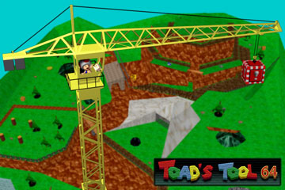
Please keep in mind that this is a Public
Beta program. It has bugs and issues. It shouldn't screw up your computer, but
I'm not responsible if it happens.
To use Toad's Tool 64, you need to provide your own Super Mario 64 ROM file. This ROM file must be "Extended" using the SM64 ROM Extender tool. What this tool does is decompress data found inside the ROM and makes a new ROM that's much more easy to edit.
The SM64 ROM Extender 1.2b can be found at this address: http://homepage.mac.com/qubedstudios/Mario64Tools.htm
After you click on the splash-screen, the first thing that happens when you start TT64 is that you'll be asked to open an Extended Super Mario 64 (US) ROM file. If you cancel or provide an unusable ROM, the editor will send you to an error page, where you can try again by pressing the Open ROM button.
If all goes well and you
open the right file, you'll get to see a progress bar on the top of the screen,
and various loading/decoding processes happening.
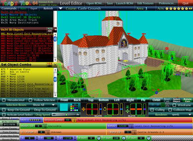
When the ROM Loading phase is over, the editor will load the "Castle Ground" level by default. You'll be able to change this default level in the preference pane.
Note for Windows Vista users: There is a possibility that you will see an error about permissions and the file being in use when you try to open a ROM. This can be solved by right-clicking on TT64's icon and choosing "Run as Administrator" from the context menu. If you don't want to have to do this every time you run the program, you can right-click on TT64's icon and choose Properties. In the Compatibility tab, check the "Run as Administrator" box. Another thing to note is that in Vista, hardware acceleration doesn't work in TT64 and the software renderer will cause some objects to be displayed incorrectly. This should be fixed when Adobe releases a Vista and intel-Mac version of Director MX later this year.
Open ROM...: Enables you to open another ROM for editing.
Save: To save changes to level data. Will turn red when any
changes are made.
Launch ROM: Will launch the currently opened ROM just like
you double-clicked the ROM file, presumably opening it in your favorite n64
emulator.
Edit Textures: Switches to the texture importer/exporter, where
you can also edit Mario's colors.
Preferences: Opens the preferences panel.
Quit: Use to quit the editor.
Refresh: Redraws the current level.
Course: Displays the current level name
Area: Displays all sub-areas in that level, clicking on a number
will load the appropriate area.
Acts: Click on a star to see only 0x24 objects found in this
particular act (star goal). Invisible objects will be grayed out the object
menu. You can use the shift key to select multiple acts to be displayed. Click
"All" to select all acts at once.
Level Menu:
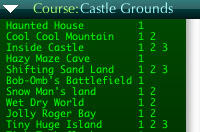
If you want to load another level, at any time, click the white arrow on the
left of the "Course:" label. This will bring up the Level Selection
Menu.
If you simply click on the name of the level, you'll load this particular level.
You can also jump to a particular sub-area by clicking a number that's on the
right of the level name.
Camera
And View Controls:
Front,Back, Top, Bottom, Left, Right buttons do what you expect them to do,
changing the camera view to see the top, front, back etc. of the level. In these
camera mode you'll be in "Select Object" mode, meaning that you can
left-click on the 3D view to select an object.
The Follow Selection button enables you to have the selected object centered
in your view. If you select another object, the view will move accordingly.
If you deselect the "Follow Selection" feature manually, this particular
view will retain its position.
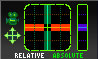
To move the camera manually you can use the "Move Camera"
widget.
There are two modes for this widget. Relative and Absolute.
In Relative mode, click and hold the mouse on the squarish
part of the widget. The camera will move left/right, up/down at a speed relative
to the distance between your cursor and the center of this square. The other
part of this widget, which is vertical, controls the movement forward and backward.
In the Relative mode, the camera continues to move until you release the mouse
button (or center your cursor).
The Absolute mode, camera movements are directly connected
to mouse movements. Click and hold anywhere on the widget square and then drag
around, you'll see that the camera moves with your mouse. If you stop moving
the mouse, the camera stops moving. Same goes for the forward/backward vertical
control.
The Drag Speed slider enables you to change the speed/movement
in both the Relative and Absolute mode.
If one of your camera views gets lost somewhere where you don't see anything,
you may use the "Reset Cam" button to reset camera
views to their centered defaults.
The Fly camera view enables you to fly around the level using the mouse.
Selecting this mode will automatically uncheck the "Follow Selection"
option, and switch to the "Rotate Cam" Screen control mode. In the
fly mode, click and drag on the 3D view to rotate the camera, and use shift
and ctrl (while holding the left mouse button) to go forward and backward, respectively.
Holding alt/option will enable you to fly faster. While in the Fly mode, you
can select objects by right-clicking, without having to switch to Select Object
mode.
The Orbit camera view is very useful. Clicking on it will automatically
enable the "Follow Selection" option, since by definition the Orbit
view follows the selected object. If you switch from the Orbit to Fly camera
view, the Fly cam will inherit the orbit cam position and rotation. To achieve
the same effect going from Front,Back, Top, Bottom, Left, Right to Fly camera,
hold the shift key.
The orbit cam will follow the curently selected object, and enable you to "orbit"
around it, and zoom in and out on the selection.
Options buttons:
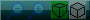
Cube buttons: Switches between Perspective/Orthographic projection.
The magnifying glasses are only available for zooming in Orthographic projection.
Magnifiying
Glasses: Used only with Orthographic camera, used to zoom in or out.
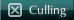
Culling: Normally, the back of polygon faces may or may not be shown,
depending on how the level is drawn. Clicking this checkbox will hide the back
of polygon faces. It can be usefully to check this box for levels that have
enclosed rooms, like inside the castle. Unfortunately, the process can take
a few seconds in some levels. (I'll try to improve performance for this option.)
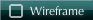
Wireframe: Shows the level in wireframe mode. Doesn't work
using the software renderer.
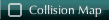
Collision
Map: Shows or hide the collision map. The collision map determines
what's solid. While some objects, like boxes and some platforms are solid by
themselves, some other platforms, particularly in Bowser's course rely on the
collision map to be solid. Eventually, I'll add an editor for the collision
map, but for now it's only used as a guide. Activating the collision map will
automatically set the Wireframe mode, so that the normal level geometry can
become transparent. Desactivating the collision map will put the Wireframe mode
back to what it was before.
Activate Level Select: Activates the Level Select Menu in the
ROM. This change is saved automatically when you click on the checkbox.
Selection Boxes: This is a pop-up menu containing 3 options.
"Show all" will display selection boxes for all three 3d objects types,
0x24, 0x42 and 0x43 (Red, Blue and Green). "This Command Only" will
only show boxes for the currently selected command type, while "Selection
only" will show a box only around the selected object(s).
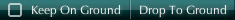
Drop To Ground: Clicking the button itself will drop the currently
selected object to the ground.
Keep
On Ground: Clicking the checkbox will make objects follow ground level
as they are being moved.
Follow Selection: Will automatically move the camera to put
the current selected object in the center of the 3d view. It's automatically
checked when switching to Orbit cam mode, and cannot be used with the Fly cam
mode.
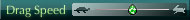
Drag Speed: Affects dragging speed for the Object Move/Rotate
and Camera widgets, as well as the flying speed.
Renderer: Displays the current 3d renderer. By default, the
renderer will be chosen automatically. Possible values are openGL, directx7_0,
directx5_2 and software. On the Mac platform, only openGL and software are available.
On Windows, all options are potentially useable, but if you don't have openGL
installed, this option will do nothing. Depending on your OS, video-card and
drivers, there may be some situations where TT64 will fall back to software.
It's not an ideal situation since the software renderer is slower, and doesn't
support some shader effects. On Windows 98 and XP, OpenGL seems to give the
best results, but that may vary depending on your machine configuration. On
Vista, TT64 will more than probably switch to software, and you won't be able
to switch to other renderer (you may try though).
Hexadecimal: When checked, TT64 will display most values using
hexadecimal notation. Useful for power-users. Hexadecimal values must be preceded
by an "h".
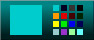
BG color palette: Enables you to switch the background color
for the 3d view. Future versions of TT64 will optionally use the original sky
texture as a background.
Screen Controls: These are to be used with the Fly cam. In
"Select Object" mode, clicking on the 3d view will select an object.
In "Rotate Mode", you'll be able to rotate the camera by dragging
the cursor around in the 3d view. Note that right-clicking in the "Rotate
Camera" mode will enable you to select an object without switching to the
other mode. Switching to any other camera mode will put the screen controls
in "Select Object" mode, while clicking the "Rotate Camera"
button will switch to Fly cam mode.
Command Menu:
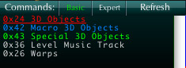
The commands menu, on the top left of the window, contains a list of commands
types. Clicking the "Expert" button enables you to see more commands,
though most of these expert commands are not editable for now.
Commands 0x24,0x42 and 0x43
are used to place 3D objects in levels. As for this version, you can only modify
already existing objects, you cannot add new objects. These 3D objects are represented
using colored wireframe boxes, corresponding to the color of the command, red
for 0x24, blue for 0x42 and green for 0x43.
Clicking on the different commands in the menu will load a list of commands,
to be displayed in the object menu, just bellow the command menu.
While all these three command types place 3D objects in the level, each of them
have particular limitations. 0x24 is the most flexible and extensive command,
for example its objects can be rotated around all three axis, while 0x42 objects
are restricted to rotation around the Y axis, and only some 0x43 objects can
be rotated, and that only around the Y axis. The difference between them will
be explained in detail in the Parameter Bar section.
Object menu:
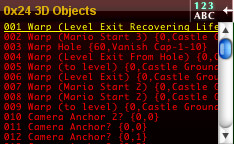
The object menu is
just bellow the command menu, and will take the color and title of the selected
command type. It contains a list of all objects that have this command type,
for this particular area of this particular level.
The first number on the left of each object entries in the menu is a sequential
number attributed from the order in which they are read in the level script.
with a description label. The two values between { } brackets are the two behavior
params values, when applicable. A description for the behavior params is provided
when they exist, if not, a numerical value is shown.
Clicking on a line will select this particular object. The line will turn yellow and will be underlined. If you hold the shift key you can select multiple objects, even from different command types.
The 123/ABC button enables you to toggle between numerical and alphabetical sorting.
Moving and Rotating Objects:
There are 3 types of objects that can be moved and rotated inside a level, 0x24, 0x42 and 0x43 and are shown as red, blue and green boxes respectively.
To move and/or rotate one
or more object, you first have to select it. You can either use the Object Menu,
or click directly on the 3d view while you are in Select Object mode. Using
a right-click should select an object on the 3d view while in Rotate Cam mode.
You can hold the shift key to select multiple objects.
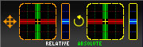
Objects can be moved using 4 methods:
1. Using the positioning
widget seen uphere. It works much like the camera control widget, but moves
objects instead of the camera.
2. Using the keyboard. Look at the end of this document for a list of relevant
key commands.
3. By dragging objects directly on the 3d view. This only works using the Front,Back,
Top, Bottom, Left and Right camera modes.
4. By clicking on arrow buttons in the parameter bar for x, y, z values, manually
entering coordinates or pasting them.
Objects can be rotated using 3 methods, but note that only 0x24 objects can be rotated on all 3 axis:
1. Using the rotation widget
seen uphere. If you hold shift you'll rotate the object by 45° increments.
2. Using the keyboard. Look at the end of this document for a list of relevant
key commands.
4. By clicking on rotation buttons in the parameter bar for x, y, z values,
manually entering coordinates or pasting them.
Changing Object Types:
You cannot add objects in
TT64 (yet), but you can change objects into another. You can, for example, change
a butterfly into a Goomba.
To do that, first select the object you want to change in the object list, or
by some other method like clicking on the 3d view.
By default, a yellow pop-up menu will appear containing a list of available
object for this level. Not all objects are available in a level, you are restricted
to a particular set, this is a limitation of the game engine. Click on the object
in the list, and it will be applied to the current selection.
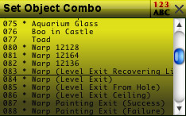
The yellow menu is a contextual menu, that means it's content and use will change
depending on which parameter is selected. To make it easier for beginners, the
"Object Combo" parameter and its pop-up menu is automatically selected
when you select a 0x24 object and when the menu is closed.
This little icon: will turn yellow in the parameter bar below to show you that the current menu pertains to this parameter. As you can see, other parameters have similar icons, clicking on them will open the related yellow menu. Like for the object list, the 123/ABC button enables you to toggle between numerical and alphabetical sorting. The X closes the current menu. To prevent the menu from opening a default parameter each time you select an object, uncheck in "Auto-open default pop-up menu" option in the preferences.
About the 3d objects in SM64:
Each 3d object is defined
by a Model ID and a Behavior number. The Model ID determines how the object
look, and the Behavior number determines how it behaves. Manually matching Model
ID's with their Behavior would be tedious, so TT64 provides a list of valid
Model IDs/Behaviors combinations used in the game. These appear in the Object
Combo menu, which is automatically opened by default when you select an 0x24
object. Selecting an "Object Combo" will actually set the Model ID
and Behavior number accordingly, though you may not see it if you have the Parameter
Bar set in "basic" mode. When in expert mode you can create new combinations,
though it can be more risky, as some Model ID/Behavior combos can be incompatible
and crash the game. 0x42 and 0x43 also provide a parameter that sets both the
Model ID and Behavior for an object (called Macro and Special Presets), but
these come from hard-coded lists in the ROM so you can't create new combinations.
Model ID zero means that the object is invisible. But the behavior code can
sometimes produce an object in the game, even though the Model ID is set to
zero. In the Object Combo, Macro Preset and Special Preset yellow menus, objects
that have a * in front of their names have a Model ID set to zero. Be careful
with some of them, as they can generate objects that will be incompatible with
the current level. Warps though, don't generate objects and can be used everywhere.
Parameter Bar:
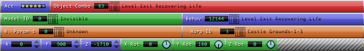
The parameter bar contains parameters and their values for the currently selected
command/object. If multiple objects are selected, dashes ( ----) will indicate
multiple different values. Parameters are color coded, here's what each color
mean.
Green/Blue: Normal parameters,
that have their values stored in ROM.
Red: Combo parameters. These are
not stored in ROM, but rather represent "combos" or presets for multiple
other values, from a list built by the editor. For example, the "Object
Combo" parameter represents Model ID/Behavior parameter pairs. Modifying
a combo value will affect multiple ROM parameters. To see which ones are affected
by the combo, click on the parameter label. If you modify affected parameters
(for example the Model ID) and end up creating a new combination, you'll see
that the description label shows "Undefined Combo". By editing this
description label and pressing enter, you can add this combination to the editor's
list.
Purple: Like normal parameters,
they are values from the ROM. The difference is that they represent combos/presets
that are defined by a list found in the ROM. Changing them doesn't affect other
parameters in the ROM, but gray parameters, which represent the equivalent Model
ID/Behavior for this particular combo will be updated accordingly when a change
is made.
Gray: These parameters are not
in the ROM as is, and can not be modified. They're simply there to indicate
the signification of a particular purple parameter preset.
Orange: The orange parameters
are called "Behavior Parameters". They have a different meaning depending
on the current behavior. For example, one behavior param can be used to determine
the content of a [!] box, or the difficulty of an enemy. For warps, one of the
behavior parameter will determine which warp destination will be used.
Parameter Bar buttons:
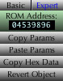
Basic/Expert: In basic mode, the parameter bar displays a minimum
of parameters, hiding some of them. The expert mode enables you to see all parameters.
ROM address: Shows the actual location of the current command
in the ROM. For experts, if you type/paste an address in this text field then
press return/enter, TT64 will attempt to find the object from this location,
and select it.
Copy Params: This will copy the currently selected params to
an internal clipboard. You can select multiple params by using the shift key.
Also, when you click a combo value, all related params are automatically selected.
Paste Params: Use to paste previously copied params. You don't
have to select the params, they'll be automatically pasted where they belong.
Copy Hex Data: For experts, will copy the current command in
hexadecimal form in the OS clipboard, enabling you to use it in an hex editor
for example.
Revert Object: Reverts the selected object(s) to the previously saved state.
Modifiying Description Labels :
Some parameters show a description
label such as "Level Exit Recovering Life" in the example below. These
can be edited by clicking them while holding the alt or option key.
When hitting return, or deselecting the label text field by clicking elsewhere,
the modified label will be saved in one of these three files: objects_labels.txt,
bparams_labels.txt and main_labels.txt, depending on the label type. These files
can be found in the program's folder. If you know what you're doing, you can
also edit them using a text editor.
This feature can be useful if you create an "Undefined Combo" which happens when you create a new Model ID/Behavior combination.
Note that these files are
replaced by default ones if you download a new version of TT64, so if you add
a lot of new descriptions, you might want to backup the 3 modified label files
from the old version and copy them in the new version's folder. If you add a
lot of interesting new combos and want me to integrate them in the default files
for subsequent releases, just send me the objects_labels.txt, bparams_labels.txt
and main_labels.txt by email.
0x24 - 3D objects.
This 3d object command type is the most flexible, as it provides full control
over position, rotation on all 3 axis, along with individual model and behavior
selection.
•Act: This parameter indicates in which "act"
(Star Goal) this particular object will appear. Click the little stars to turn
on or off a particular act. Note that the sixth star has another meaning which
I haven't found yet.
•Object Combo: This combo will affect Model ID/Behavior
parameter pairs. Using it will ensure that a particular Model has the right
Behavior. Clicking on the little menu icon will present you with a yellow
menu list of possible combos for this particular level. Not all objects
are available in each level. TT64 will try to provide you with a list containing
only those that can be used in the current level. There are instances though
where an object might crash the game when played, even if it's part of the list.
•Model ID (Expert mode only): the Model ID value represents
which polygon object is displayed in the game. A value of zero means an invisible
object. Some objects rely on the behavior code to display a polygon object,
and will display something in the game even though they have a value of zero.
A pop-up menu is available containing valid values for this particular level.
Again, not all objects are available to each level. Available IDs are defined
by 0x22 commands, which can be viewed and edited when the Commands: Expert mode
is activated. Editing the Model ID parameter is not recommended unless
you're an adventurous hacker, since the Behav value must be compatible with
this particular Model ID. Using the Object Combo menu is a safer bet
since it provides valid Model ID/Behav combinations.
•Behav (Expert mode only): This value represents how
the object moves, react and behaves, including how animated characters body
parts move. Many behaviors are meant to be used with a particular Model, assigning
the Goomba behavior to a Koopa turtle for example, will have weird results.
The Behav pop-up menu will provide a list of all possible behaviors, even some
that may crash the game if used in a particular level or with a particular Model.
Again, only edit if you know what you're doing, and use the Object Combo menu
instead if you want to ensure the validity of the Model/Behav combination.
•B. Param 1 & 2: Just after Behav (or after Object
Combo if in Basic mode), you'll find two orange parameters that are usually
labeled"B. Param". These are behavior params. Their meaning changes
depending on the current Behav value. TT64 includes custom labels and menus
for some behavior params. For example, for the "Walking Goomba" behavior,
the second B. Param will be labeled "Size" and the pop-up menu will
provide you with valid values, for "Micro", "Normal" and
"Giant" sizes. For warps, the label will be "Warp ID", and
the pop-up menu will provide a dynamic list of possible warp destinations for
the current level. For objects that include a dialog, the description label,
and menu will correspond to original dialog text (for example, for Toad, or
a wooden post sign). Note that in this version of TT64, modified dialog text
won't appear in descriptions and menus.
•X,Y,Z, X rot, Y rot and Z rot: These are simply position
and rotation values for the current object. For position you can use the little
up/down arrows to modify the value, or enter an arbitrary value, or use the
Object Move widget, keyboard controls or drag the object on the screen. For
the rotation value, you can use the little circular rotation widget, or the
Object Rotate widget. Holding shift will restrict rotation to 45° angles.
0x42
- Macro 3d objects.
This 3d object command type is more limited than the 0x24 command, as it's restricted
to a list of "Macro Presets" that defined which model and behavior
is used. Also, rotation is only possible around the Y axis.

•Macro Preset: This value represents a Model/Behav/B.
Params combination, as defined by the game itself. Unlike the 0x24 command's
Object Combo, this is an actual value in the ROM that can range from 0 to 511,
and the related Model/Behav parameters cannot be modified. It provides a pop-up
menu with objects that are available for this level.
•B. Param 1 & 2 (orange): Similar to the Behavior
parameters in 0x24 commands, the difference here is that the orange parameters
will override those defined by this particular Macro Preset value, if they're
not equal to zero.
•Y rot: Just like the 0x24 command, the main difference
here is that rotation in 0x42 commands is only possible around the Y axis.
•Model ID/Behav/B. Params (gray): These are for display
purposes only, they are linked to the current Macro Preset value. You can though,
copy these parameters and paste them in a 0x24 command, for which these parameters
are modifiable. Gray B. Params are overridden by their orange counterparts if
the latter aren't equal to zero.
0x43
- Special 3d objects.
This is the most limited 3d object command type, and the most complicated to
deal with. It can vary in length, some parameters don't exist in certain instance,
that depend on the "Special Preset" value. The game will expect the
command to be a certain length depending on this value.

•Length:
Indicates the length of this particular command. Dependent on the "Special
Preset" value. Some commands are 8 bytes long, some 10 or 12 bytes.
•Special Preset: Similar to the Macro Preset parameter
of 0x42 commands, but it uses a different preset list in the ROM, with values
ranging from 0 to 255. You'll find that the pop-up menu often provide only a
few choices, since it's limited to values used by commands of the same size.
•B. Param 1 & 2 (orange): These are not always present
in 0x43 commands. Similar to the Behavior parameters in 0x24 commands, the difference
here is that the orange parameters will override those defined by this particular
Macro Preset value, if they're not equal to zero.
•Y rot: Just like the 0x42 command, but Y rotation is
not present for some object commands.
•Model ID/Behav/B. Params (gray): These are for display
purposes only, they are linked to the current Special Preset value. You can
though, copy these parameters and paste them in a 0x24 command, for which these
parameters are modifiable. Gray B. Params are overridden by their orange counterparts
if the latter exist and aren't equal to zero.
0x36 - Level Music Track.
This is to set which music track plays in this particular level/area.
•Music Track: The only parameter for this command, provides
a pop-up menu containing all tracks.
0x26 - Warps.
Sets how warps are connected together. The warp themselves are put in levels
using 0x24 commands that have a warp behavior, and use a Warp ID value that
refers to a particular 0x26 command.
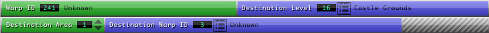
•Warp ID:
This is the value that will be referred by 0x24 warp objects, be careful if
you edit those, make sure that all 0x24 commands referring to this particular
warp command are modified accordingly. Keep in mind that commands in other levels
can refer to this particular warp connection. Value -15 is used when Mario dies,
and -16 when he completes a level.
•Destination Level: Sets the destination level for this
particular warp.
•Destination Area: Sets the destination area for this
particular warp.
•Destination Warp ID: Sets the destination Warp ID. The
pop-up menu will provide a dynamic list of Warp IDs available in the Level and
Area defined for this command.
0x27
- Warps (Paintings).
These only exist inside the castle. Sets the destination for painting and level
warps. Interesting to note is that for paintings, there are 3 possible destinations,
which are linked to the horizontal position of Mario when he enters the painting.
If he enters the painting on the left side, the first warp destination is used.
If he enters the middle part, the second warp is used, and the third for the
right side. In the original game, they're set to the same value, but you can
set them differently if you want. Keep in mind that painting level exits are
normal warps placed using 0x24 and 0x26 commands, and unless you change their
value in the level itself, Mario will exit the level through the original painting.
•Warp ID:
I don't recommend editing this parameter, as it's linked to paintings values
that cannot be changed.
•Destination Level: Sets the destination level for this
particular painting warp.
•Destination Area: Sets the destination area for this
particular painting warp.
•Destination Warp ID: Sets the destination Warp ID. The
pop-up menu will provide a dynamic list of Warp IDs available in the Level and
Area defined for this command.
0x22 - Geometry Layout Pointer. (Expert Mode only)
This command type defines which polygon object will be displayed when a particular
Model ID is used in a level. The Geometry Layout data is a particular set of
commands defining where and how polygons are assembled to make a model. The
0x22 command points to this data.
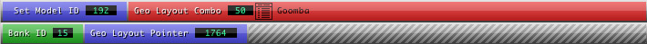
•Set Model ID: This is the value that's referred by 0x24
commands, and indirectly by 0x42 and 0x43 commands. I don't recommend editing
this value, as many commands may rely on this particular value to exist.
•Geo Layout Combo: This is a combo value for Bank IDs/Geo
Layout Pairs. It's pop-up menu provides a list of valid models that can be used
in this particular level. The available models are limited to those that are
part of a data bank loaded in memory by the game using the 0x17/0x18/0x1A commands.
Note that if you are editing a shared 0x22 command (one that has an "s"),
changes will affect other levels too, and the pop-up menu will restrict your
choices to models that can be used in all levels sharing this command.
• Bank ID: This is the bank number where the Geometry
Layout data is found. This value must be one of the available data bank for
this particular level. It's not editable, use the Geo Layout Combo menu to set
it.
•Geo Layout Pointer: Actual location of the Geometry
Layout data inside this particular data bank. It's not editable, use the Geo
Layout Combo menu to set it.
•Important:
You will have to refresh the level to see the effects of changes made to 0x22
commands.
0x21 - Polygon ID and Pointer. (Expert Mode
only).
It's similar to the 0x22 command, in the sense that a 0x24 command can refer
to this command with it's Model ID parameter. The difference is that the 0x21
command points to polygon data directly instead of using a Geometry Layout script.
Only a few objects use this. Not editable in this version of TT64.
•Set Model ID: This is the value that's referred by 0x24
commands, and indirectly by 0x42 and 0x43 commands. Not editable.
• Bank ID: This is the bank number where the polygon
drawing commands are found. This value must be one of the available data bank
for this particular level. Not editable.
•Polygoncmds Pointer: Actual location of the polygon
drawing commands inside this particular data bank. Not editable.
0x17 - Copy Data to RAM Bank. (Expert Mode
only).
Loads data from ROM into a RAM Bank. These are NOT editable for now.
These essentially define
which object bank will be available for this particular level. In a Bowser battle
level for example, the Banks containing its polygons and geometry layout data
will be loaded in memory. Since the Bowser banks are not loaded in other levels,
you cannot put Bowser in other levels. TT64 will try to ensure that only objects
from available banks are provided in menus. These will be eventually editable
in future versions of TT64, but the process is not as simple as you might think.
Note that many of these 0x17 commands are 0x18 commands in the original, unextended
ROM. The 0x18 command loads compressed MIO0 data. The ROM extender decompresses
this data and put the uncompressed version at the end of the ROM, changing the
commands to 0x17, and their pointers accordingly.
0x1A - Decomp MIO0 to RAM Bank. (Expert Mode
only).
Not editable.
These are similar to 0x18
commands, but for some reason the related banks couldn't be simply decompressed
and loaded with 0x17 commands. The solution was to decompress the data, but
still put them in a MIO0 wrapper, still loading them with 0x1A commands.
0x39 - Load Macro Objects. (Expert Mode only).
Not editable for now. Defines the location of the 0x42 commands list, which
is normally inside the level bank (originally compressed MIO0 data).
0x2E - Load Solidity. (Expert Mode only).
Not editable for now. Defines the location of the collision data, which is followed
by the 0x43 commands list, which is normally inside the level bank (originally
compressed MIO0 data).
0x31 - Terrain Type.
Defines how various parts of the terrain behave. Not editable for now, but may
soon be.
Texture
Importer Exporter:
Enables you to change textures used by the game. Also includes
a tool to change Mario's colors.
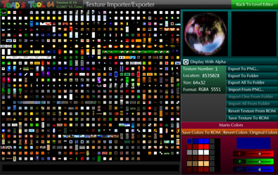
By default, TT64 won't load textures from the ROM when you open
it, but rather load the original textures, which are included in the program.
If you want to load textures from ROM, check the appropriate checkbox in the
preferences.
Display
with Alpha: Only affects the editor's display, not the game, when checked
will show the texture using the Alpha mask.
Export To PNG: Exports the currently selected texture to a
PNG file. It's better to do this first and edit this file with a painting program
when you want to modify a texture, to make sure you use the right size. Textures
and masks are exported in the same file, side by side. If you export a 64x32
texture for example, the resulting PNG will be 128x32. Use the left half for
the texture, and the right half for the mask.
Export To Folder: Will automatically export the currently selected texture to a PNG file in the "Textures" folder found in the same directory as TT64. Make sure this folder is present at this location.
Export All To Folder: Exports all textures to the "Textures" folder.
Import From PNG: Enable you to import a single texture from a PNG file. Even though TT64 will try to resize the imported texture, you're better off working on a previously exported texture, especially since the texture and mask needs to be side by side. Imported textures only replace those currently in memory, you'll have to click on the "Save Texture To ROM" to be able to see this texture in the game.
Import One From Folder: Currently disabled, it will enable you to directly import a texture from the "Textures" folder without having to select a file, but you'll have to make sure the filename wasn't modified.
Import All From Folder: Currently disabled, will enable you to import all PNGs from the "Textures" folder, provided that names were not changed.
Revert Texture From ROM: Reloads the current texture from the ROM.
Save Texture To ROM: Click to save the current texture to the ROM. You'll have to do that for every texture you imported to be able to see them in the game. Note that clicking on "Save" while in the Level Editor mode won't save textures, so be sure to do it while in the Texture Importer/Exporter. A button will eventually be added to save all modified textures at the same time.
Mario Colors:
With
this tool you can edit Mario's colors. Click on a color, and use the RGB slider
to ajust the tint and brightness. You can duplicate a color by right-clicking
or alt-clicking on the destination cell.
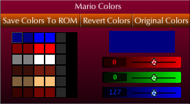
Save Colors To ROM: Like textures, Mario's colors are saved separately from the level data, don't forget to save them.
Revert Colors: Reloads Mario's colors from ROM.
Original Colors: Loads Mario's original colors.
Mario Size:
Enables you to change Mario's size in the game.
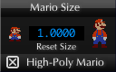
Click on the small or big Mario icons to cycle through size presets.
Click on the Reset Size button to set size back to 1x (normal size).
High-Poly Mario: Normally in the game, when Mario is at a certain distance from the camera, a low or very-low polygons version of his body is used.
Checking this option will ensure that the high polygon model is always used, which can be useful for when Mario is big, but is also nice for normal size.
Note that using the high polygon Mario may slow down the game a little, but I didn't see any difference.
Preferences:
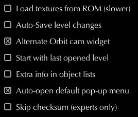
Load textures from ROM: When opening a ROM, will load custom textures
directly from the ROM, instead of using the included original textures. This
will slow loading individual levels the first time you load them in memory.
Auto-Save level changes: When this option is checked, every change made to level data will be automatically saved.
Alternate Orbit cam widget: Swap the vertical rotation and zooming functions of the Move Cam widget when in Orbit cam mode.
Start with last
opened level: Next time you start TT64, it will open the last level
you were working on.
Default level: To set the level that's loaded when opening
a ROM. Overriden by the "Start with last opened level" option if checked.
Extra info in object lists: Will add two things to each item in the object list, in between the object number and its description.
First is a single letter
to the right tells you if the object is either i=internal, s=shared or x=external.
Internal objects means that they are part of the level script, and exclusive
to this level. Shared objects are not part of the main level script, and are
used by multiple levels, and that means that changing it will affect these levels
too. External objects are also not part of this level's script, but they're
only used by that level. The next number is one of the object's parameter, this
can vary depending on the command type.
Auto-open default pop-up menu: On by default, will make TT64 automatically open a default pop-up menu when you select an object and the yellow menu is closed. Uncheck to have the pop-up menu only appear when you click on a icon.
Skip checksum: If you're an expert hacker and have modified the checksum of the ROM after it was extended, the ROM will fail to open unless this option is checked.
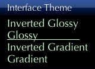
Interface theme: Used to select one of four themes used to display the interface. Default is "Glossy". You can also click on the Toad's Tool 64 logo in the main interface to cycle between themes.
Keyboard Control:
When a 3d object is selected:
[A] [D] : Rotates the Orbit cam horizontally.
[W] [S] : Zoom Orbit Cam in or out.
[R] [F] : Rotates the Orbit cam vertically.
[U] [J] : Increase/decrease X position of the selected object(s)
[I] [K] : Increase/decrease Y position of the selected object(s)
[O] [L] : Increase/decrease Z position of the selected object(s)
[-] [=] : Select Next/Previous object in the object list.
In Fly cam mode:
[Shift] [Ctrl] : Flies forward or backward, respectively.
[Shift] [Command] : (Mac) Flies forward or backward, respectively.
[alt/option]
: Flies faster.
To switch between camera modes :
[1,2,3,4,5,6,7,8] : Front, Back, Top, Bottom, Left, Right, Fly, Orbit
[&] (Shift+7)
: Switches to Fly cam while keeping the current cam position.
Rotation widgets:
[Shift]
: Hold while dragging the "Object Rotate" or rotation widgets in the
Parameter bar to restrict to 45° angles. Can also be used
when rotating the Orbit cam using the "Move Camera" widget.
When clicking on items in the object list or Parameter bar items:
[Shift] : Hold to select multiple objects/params.
New features and improvements in 0.5.9b:
•Mario's shadow is now resized to reflect size changes.
Bug Fixes in 0.5.9b:
•A very bad
bug has been fixed, going to the texture editor and back would corrupt the ROM,
and cause it to crash when run in an emulator.
•The issue had something to do with saving Mario's size, which is done
automatically when quitting the texture editor.
•To fix a crashing ROM, open it with TT64, go to the texture editor, and
then back to the level editor.
•Opening a correctly extended ROM on a Japanese or other asian unicode
Windows systems should now work.
•Note that for now, the ROM extender doesn't work on Japanese or asian
Windows PCs. This issue is being worked on.
Bug Fixes in 0.5.8b:
•Some of the
bundled default textures were corrupted and were causing some display problems,
this has been corrected.
•Fixed some problems when editing 0x22 commands.
•Loading ROMs containing 0x22 pointing to non-existant banks shouldn't
cause a script error anymore.
•Fixed a potential bug where in some context the box sizes wouldn't match
the objects with some modified ROMs.
•Now includes an already generated M64Geometry.m64 file, so the first
run should be much faster.
•Generating the M64Geometry.m64 file from an already modified ROM could
lead to potential problems so that's why I include it now.
Bug
Fixes in 0.5.7b:
•Fixed a stupid
bug that was preventing level changes from being saved.
•When entering hexadecimal values in fields, a script error would sometime
occur, it should be now fixed.
Bug Fixes in 0.5.6b:
•Fixed a bug
that was causing a script error when loading some ROMs that were already modified
and were containing "Undefined Combos".
•Fixed a bug where a script error happened when trying to open a ROM after
canceling the opening.
•Saving modified description labels should now work properly.
Bug Fixes in 0.5.5b:
•Fixed a bug where putting a 0x42 object that had a Macro Preset value
of "1E" would cause all subsequent objects to become invisible and
in-editable when reloading the ROM.
•Some previously missing 0x42 objects in Bowser course 3 are now visible
and editable. (Related to the bug above).
•Previous versions of TT64 would only show you Object Combos and Behaviors
used in the ROM that was loaded. That means that if you were to change the behavior
that was only used by a single object in the game, the behavior wouldn't appear
in the menu list the next time you'd load the ROM since it wasn't used by this
ROM.
•TT64 0.5.5b will list all Behaviors and Object Combos from the original
game even though the loaded ROM doesn't use them.
•Changing the text of a parameter label wont cause the yellow pop-up menu
to switch to the parameter.
•Camera and move controls are now disabled when not in 0x24, 0x42 or 0x43
object mode, as they were supposed to be.
•Yellow pop-up menu should now update correctly when pasting params.
•Pasting params should not cause script errors anymore, as it did in some
contexts.
•Editing 0x22 commands now updates the objects in the 3d view and object
lists.
•Yellow pop-up menu for Destination Warp ID will update correctly while
changing the destination level to reflect which warps are available there.
•Maximizing before the ROM is first loaded shouldn't cause an error anymore.
•Unnamed Behavior params won't show as "B. Param: B. Param"
in the pop-up menu header.
•Yellow pop-up menu should now update correctly when reverting objects.
•Rotating in "relative" mode would cause a script error. Rotation
with the widget is now only done in absolute mode. The "relative"
and "absolute" options will only affect the move object widget.
•Reverting a 0x43 object that has a rotation parameter should now revert
the rotation value, as expected.
•Reverting commands other than 0x24, 0x42 and 0x43 will only revert commands
of the current command type.
•Sorting in the yellow pop-menu would fail in some context. It should
now work correctly.
•When changing a coordinate value manually, or when pasting coordinates,
the camera should now follow the object as expected, when in Orbit Camera mode
or when the "Follow Selection" option is checked.
•In some cases, every item in the yellow pop-menu would become underlined.
This shouldn't happen in this version.
•Exporting grayscale textures would cause the alpha mask to get inverted,
and the gray depth would be severely reduced. This is fixed.
•The Export To Folder button in the Texture Importer/Exporter should now
work as expected.
•Mario Colors interface had a few glitches that are now fixed.
New features and improvements in 0.5b:
•Updated to Macromedia/Adobe Director MX 2004 10.1.1
(from 10.0) which reduced the size of the program by almost 50%!
•The update to 10.1.1 might also fix a few "crashing" bugs and
some other issues.
•New feature to set Mario's size.
•A checkbox to force the high polygon Mario model to be used all the time.
Bug Fixes in 0.5b:
•Fixed a bug
that caused a script error "#loch" when quitting.
•Fixed the "#forecolor" script error bug that would happen in
certain circumstances when the ROM couldn't be open.
•The texture editor should now work correctly, it was broken in 0.4b,
causing certain textures to be wrongly imported as 32x32.
•Also in the texture editor, saving the texture to ROM shouldn't cause
a script error anymore.
•Reverting a texture from ROM should now update the thumbnail grid accordingly.
New features and improvements in 0.4b:
•TT64 can now display the collision map.
•The object list and pop-up menu can now be sorted by alphabetical order.
•New interface layout brings the positioning widgets closer to the middle
of the screen.
•The little menu icons in the parameter bar light up when selecting.
•Better lighting in software renderer.
•Simpler object list, with an option to show the extra info found in previous
versions.
•Auto-open default pop-up menus when selecting objects.
•Now uses the checksum to ensure the ROM is valid (can be disabled).
•Themes, if you get an overdose of glossiness, you can turn it off. Four
themes are available.
•Some fixes and changes in the description labels.
Bug Fixes in 0.4b:
•TT64 will
no longer generate a script error when activating the wireframe mode in areas
greater than 1.
•You can now Quit TT64 using the standard close box.
•Zooming with the camera widget now works correctly when the "Follow
Selection" option is checked.
•The pop-up menu won't close when opening another menu.
•Fixed a bug where the 3d view would get incorrectly sized if the window
was resized when the level menu was open.
•No more script errors when clicking on the empty part of the area selector.
•When pasting params, the object list and pop-up menu are now correctly
updated.
•If the Drop To Ground button is clicked and the camera is in Orbit mode,
the camera will follow the object as expected.
Many other small bug fixes. If I forgot your pet-peeve bug, please contact me.